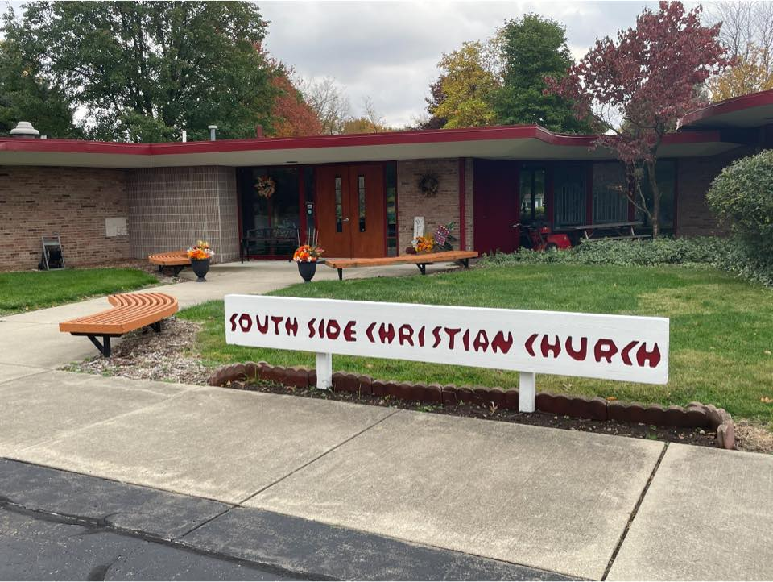

Disciples of Christ · South Bend, Indiana
Experience the freedom of God's love.
All people are welcome — regardless.

Who we are
We find deep comfort in the historic rhythms of faith — classic hymns, prayers, and liturgy that create a familiar, peaceful space to quiet your mind and connect with God.
You don't have to leave your brain or your authentic self at the door. We celebrate questions, encourage open-minded exploration, and believe faith is a journey we navigate together.
We take the call to love our neighbors seriously — through community support, advocacy for justice, and simply showing up for one another in times of need.
Symbols & values
Inclusive, affirming, multi-voiced — the symbols in our space tell the story of who we are and what we believe.
Arched windows
See all symbols →Candles of peace
See all symbols →